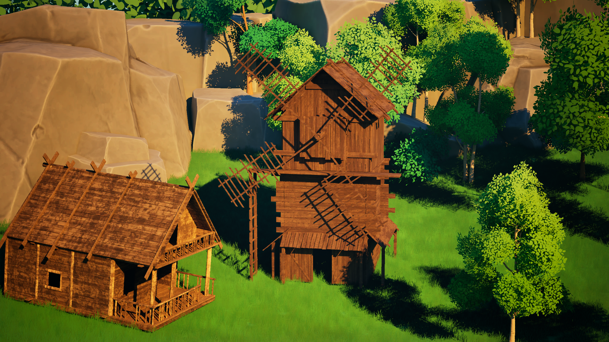

Environment

Stylized Medieval Farm & Windmill Kit
A comprehensive low-poly pack featuring a majestic windmill, rustic farm structures, and modular environment props designed for fantasy games.
Cubic Haven crafts hand-built, performance-friendly low-poly asset packs for game developers — warm wooden textures, modular pieces, and a cohesive stylized look ready to drop into your next project.

A comprehensive low-poly pack featuring a majestic windmill, rustic farm structures, and modular environment props designed for fantasy games.

A detailed collection of low-poly handcarts, trading wagons, and transport props tailored to bring life and movement to rural game environments.

Essential rustic furniture and props to bring authenticity and detail to your medieval farm and village interiors.